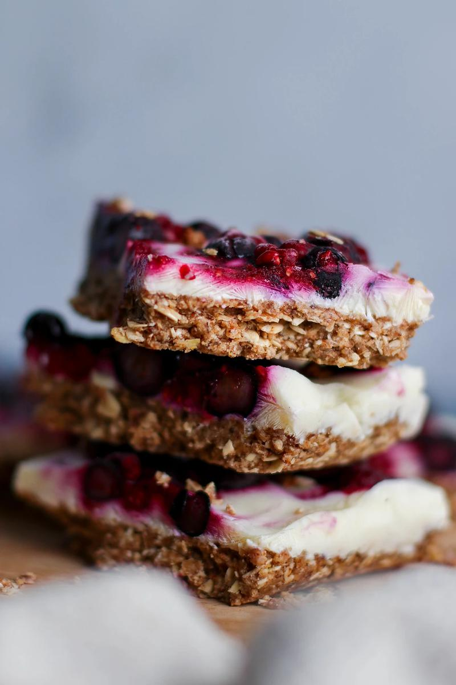

Frozen Yogurt Breakfast Bar Recipe

Description
A way to eat yogurt with one hand! These bars have a subtle sweetness and are rather filling thanks to the almond butter, oats, and yogurt.
Ingredients
- 1 cup Soft Medjool Dates (pits removed)
- 2 cups Old-Fashioned Rolled Oats
- 1 cup Almond Butter
- 1/4 cup Ground Flaxseeds
- 1 tsp Ground Cinnamon
- 1 1/2 cups Unsweetened Soy Yogurt
- 1 cup Stewed Berries
Steps
- In a food processor, blend the dates until smooth.
- Add the oats, almond butter, ground flaxseed, and cinnamon. Blend again until well combined, stopping to scrape down the sides as needed.
- Transfer the mix to an 11 x 7 inch parchment-lined baking dish and press firmly into the base of the dish.
- Top with the yogurt and spread out evenly.
- Dot the yogurt with the stewed berries and use a butter knife to swirl.
- Place into the freezer and let freeze for 1-2 hours, or until the bars are solid enough to cut.
- When removed from the freezer, cut into squares or bars of the desired size.
- Let thaw for 3-5 minutes before eating.